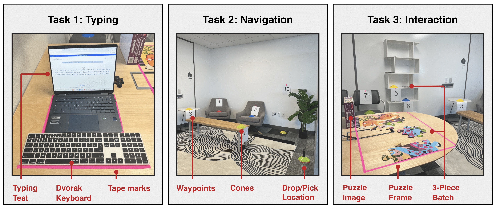
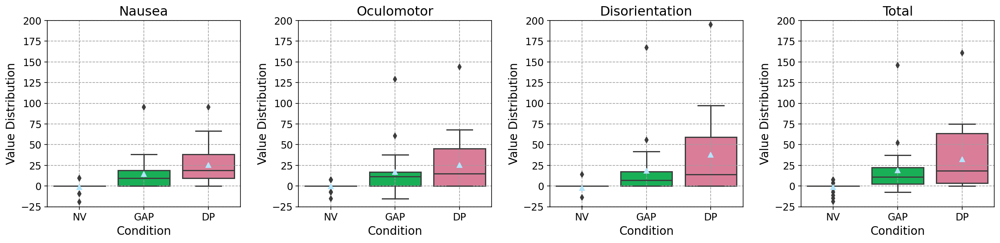
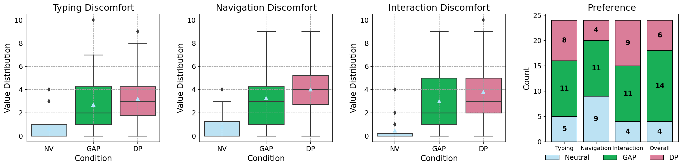

Visualization techniques for revealing subsurface anatomical structures in augmented microscopy. (a) Original microscope view of the 3D-printed temporal bone model. (b) Opaque rendering of segmented anatomical structures augmented onto the bone surface. (c) Opaque rendering with a surface-conforming virtual aperture that reveals the subsurface structures through a localized opening. (d) Alpha blending visualization that partially reveals the underlying anatomy while preserving contextual surface cues.
Abstract
The ability to see through the surface of the human body is central to medical augmented reality (AR) applications ranging from surgical planning to intraoperative guidance. However, accurately perceiving the depth of virtual structures relative to real anatomy remains a persistent challenge. This is particularly pronounced under the operating microscope, where high magnification, limited viewpoints, and tight error tolerances make depth and occlusion both essential and difficult to infer. Prior work has proposed methods for visualizing subsurface content using Video See-Through (VST) and Optical See-Through (OST) head-mounted displays (HMDs). However, the implementation of these approaches in surgical microscopes remains an open question due to the unique microscope perceptual conditions as well as the additive characteristics of microscope optics and display systems. To the best of our knowledge, this work is the first to investigate the perceptual accuracy of AR microscope visualization techniques for depicting virtual content inside the human body. We introduce a custom depth perception measurement apparatus based on a half-silvered mirror that enables alignment between a real measurement probe and subsurface virtual targets while viewing through a stereoscopic surgical microscope. We then implement a custom alpha blending method and a virtual aperture that conforms to the three-dimensional surface geometry. Using our apparatus, we conducted a 3 x 2 within-subjects user study evaluating depth estimation accuracy and confidence across visualization techniques. Results showed that both the virtual aperture and alpha blending significantly reduced absolute depth error compared to standard opaque rendering. Alpha blending without an aperture achieved localization accuracy comparable to opaque rendering with a virtual aperture while eliminating the systematic depth underestimation bias observed in traditional renderings. Furthermore, the presence of a virtual aperture increased users' confidence and was preferred over other methods. These findings provide insights for the design of AR visualization systems for microsurgical applications.
Passthrough Modes

2D illustration comparing reprojection between DP and GAP: The foreground and background are reprojected using different geometries. In DP, each 3D point is assumed to belong to a single plane situated at a certain distance. This results in reprojecting objects at incorrect pixel locations and scale (left). In comparison, GAP uses a geometry estimate which improves the perceived location and scale (right).

DP versus GAP output images: Two images taken from the HMD at the same pose. DP enlarges objects, making the scene look closer to the user. The scale difference can be noticed when comparing the text on the bottom right of both images. While GAP improves the scale, it results in warping artifacts which can be observed on the edge of the door behind the hand.
User Study

User Study Setup: Pictures of the lab setup for the tasks completed by participants while wearing the VST HMD.

SSQ: Box plots of Nausea (N), Oculomotor (O), Disorientation (D), and Total subscores of simulator sickness comparing all conditions. Natural Vision (NV) led to significantly lower N, O, D, and total sickness scores than both DP and GAP (p < 0.05). GAP led to significantly lower N (p = 0.016), D (p = 0.029), and total (p = 0.011) sickness scores than DP.

Subjective Discomfort: Box plots of discomfort scores for all conditions and preference for passthrough conditions across the typing, navigation, and interaction tasks. NV led to significantly lower discomfort scores than DP and GAP (p < 0.05) across all tasks. Compared to DP, GAP led to significantly lower discomfort scores across all tasks, typing (p = 0.046), navigation(p = 0.041), interaction (p = 0.022).
Video Presentation
BibTeX
@inproceedings{10.1145/3706599.3720163,
author = {El Chemaly, Trishia and Niu, Wally and Fan, Yunxin and Wu, Yuxuan and Fu, Fanrui and Leuze, Christoph and Hargreaves, Brian and Daniel, Bruce and Blevins, Nikolas},
title = {Seeing Through the Surface: Evaluating Visualization Techniques for Depth Perception in Augmented Microscopy},
year = {2026},
booktitle = {IEEE Transactions on Visualization and Computer Graphics}
}